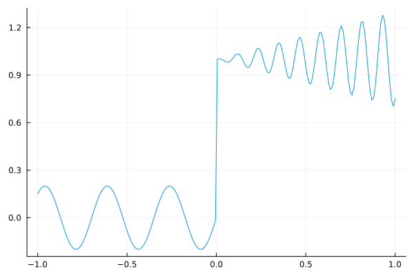
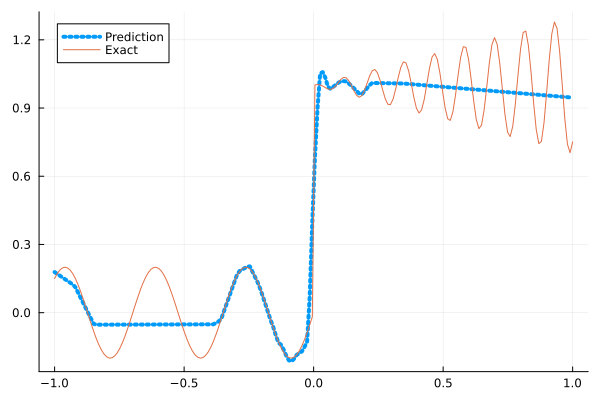
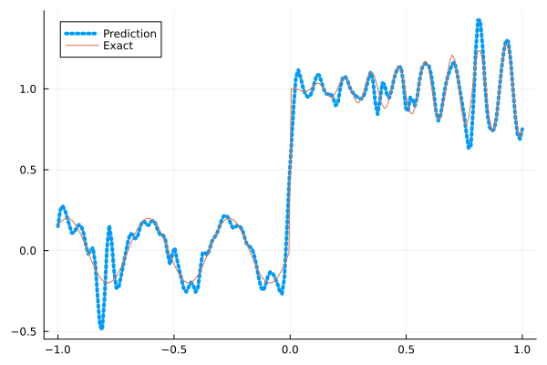
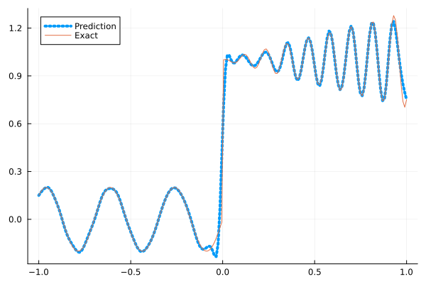
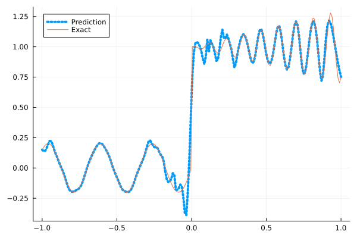
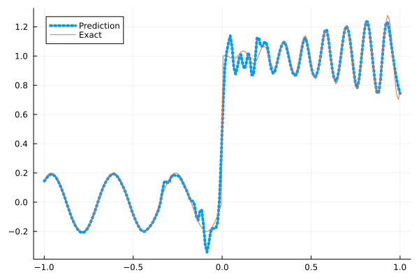

Fitting a nonlinear discontinuous function
This example is taken from here. However, we do not use adaptive activation functions. Instead, we show that using suitable non-parametric activation functions immediately performs better.
Consider the following discontinuous function with discontinuity at $x=0$:
\[u(x)= \begin{cases}0.2 \sin (18 x) & \text { if } x \leq 0 \\ 1+0.3 x \cos (54 x) & \text { otherwise }\end{cases}\]
The domain is $[-1,1]$. The number of training points used is 50.
Import pacakges
using Lux, Sophon
using NNlib, Optimisers, Plots, Random, StatsBase, ZygoteDataset
function u(x)
if x <= 0
return 0.2 * sin(18 * x)
else
return 1 + 0.3 * x * cos(54 * x)
end
end
function generate_data(n=50)
x = reshape(collect(range(-1.0f0, 1.0f0, n)), (1, n))
y = u.(x)
return (x, y)
endgenerate_data (generic function with 2 methods)Let's visualize the data.
x_train, y_train = generate_data(50)
x_test, y_test = generate_data(200)
Plots.plot(vec(x_test), vec(y_test),label=false)
Naive Neural Nets
First we demonstrate show naive fully connected neural nets could be really bad at fitting this function.
model = FullyConnected((1,50,50,50,50,1), relu)Chain(
layer_1 = Dense(1 => 50, relu), # 100 parameters
layer_2 = Dense(50 => 50, relu), # 2_550 parameters
layer_3 = Dense(50 => 50, relu), # 2_550 parameters
layer_4 = Dense(50 => 50, relu), # 2_550 parameters
layer_5 = Dense(50 => 1), # 51 parameters
) # Total: 7_801 parameters,
# plus 0 states.Train the model
function train(model, x, y)
ps, st = Lux.setup(Random.default_rng(), model)
opt = Adam()
st_opt = Optimisers.setup(opt,ps)
function loss(model, ps, st, x, y)
y_pred, _ = model(x, ps, st)
mes = mean(abs2, y_pred .- y)
return mes
end
for i in 1:2000
gs = gradient(p->loss(model,p,st,x,y), ps)[1]
st_opt, ps = Optimisers.update(st_opt, ps, gs)
if i % 100 == 1 || i == 2000
println("Epoch $i || ", loss(model,ps,st,x,y))
end
end
return ps, st
endtrain (generic function with 1 method)Plot the result
@time ps, st = train(model, x_train, y_train)
y_pred = model(x_test,ps,st)[1]
Plots.plot(vec(x_test), vec(y_pred),label="Prediction",line = (:dot, 4))
Plots.plot!(vec(x_test), vec(y_test),label="Exact",legend=:topleft)Epoch 1 || 0.35961558596513266
Epoch 101 || 0.017920781521557756
Epoch 201 || 0.01619622129183486
Epoch 301 || 0.015634283860907382
Epoch 401 || 0.015300632223114388
Epoch 501 || 0.014426157447894338
Epoch 601 || 0.013305983736472434
Epoch 701 || 0.012680909432078318
Epoch 801 || 0.012509404346275135
Epoch 901 || 0.012405347238928437
Epoch 1001 || 0.012326185121222789
Epoch 1101 || 0.012563322325938512
Epoch 1201 || 0.012353176548991795
Epoch 1301 || 0.0125492740128559
Epoch 1401 || 0.012263356500776632
Epoch 1501 || 0.012309050165277596
Epoch 1601 || 0.012309595869231502
Epoch 1701 || 0.012302363414996131
Epoch 1801 || 0.01241910886346193
Epoch 1901 || 0.012545987595050464
Epoch 2000 || 0.012318174729719704
9.414578 seconds (12.81 M allocations: 1.446 GiB, 4.85% gc time, 91.83% compilation time)
Siren
We use four hidden layers with 50 neurons in each.
model = Siren(1,50,50,50,50,1; omega = 30f0)Chain(
layer_1 = Dense(1 => 50, sin), # 100 parameters
layer_2 = Dense(50 => 50, sin), # 2_550 parameters
layer_3 = Dense(50 => 50, sin), # 2_550 parameters
layer_4 = Dense(50 => 50, sin), # 2_550 parameters
layer_5 = Dense(50 => 1), # 51 parameters
) # Total: 7_801 parameters,
# plus 0 states.@time ps, st = train(model, x_train, y_train)
y_pred = model(x_test,ps,st)[1]
Plots.plot(vec(x_test), vec(y_pred),label="Prediction",line = (:dot, 4))
Plots.plot!(vec(x_test), vec(y_test),label="Exact",legend=:topleft)Epoch 1 || 1.1070898779876077
Epoch 101 || 0.001191588312731268
Epoch 201 || 1.717517108701722e-5
Epoch 301 || 1.9101119287993877e-7
Epoch 401 || 8.517967630392633e-9
Epoch 501 || 4.960716999201323e-10
Epoch 601 || 2.2887594846524414e-11
Epoch 701 || 1.9727824750890704e-12
Epoch 801 || 3.735782958437452e-13
Epoch 901 || 8.15140043525193e-14
Epoch 1001 || 7.132613339994518e-14
Epoch 1101 || 5.053701398485131e-14
Epoch 1201 || 2.4809003151526498e-14
Epoch 1301 || 3.0974807039670457e-14
Epoch 1401 || 2.493747240293868e-14
Epoch 1501 || 4.538830743758428e-14
Epoch 1601 || 4.096970660628054e-14
Epoch 1701 || 2.5091739253005378e-14
Epoch 1801 || 7.315945810812827e-14
Epoch 1901 || 4.6919813730716637e-14
Epoch 2000 || 5.082751226682671e-14
4.653463 seconds (7.67 M allocations: 1.252 GiB, 5.35% gc time, 83.64% compilation time)
As we can see the model overfits the data, and the high frequencies cannot be optimized away. We need to tunning the hyperparameter omega
model = Siren(1,50,50,50,50,1; omega = 10f0)Chain(
layer_1 = Dense(1 => 50, sin), # 100 parameters
layer_2 = Dense(50 => 50, sin), # 2_550 parameters
layer_3 = Dense(50 => 50, sin), # 2_550 parameters
layer_4 = Dense(50 => 50, sin), # 2_550 parameters
layer_5 = Dense(50 => 1), # 51 parameters
) # Total: 7_801 parameters,
# plus 0 states.@time ps, st = train(model, x_train, y_train)
y_pred = model(x_test,ps,st)[1]
Plots.plot(vec(x_test), vec(y_pred),label="Prediction",line = (:dot, 4))
Plots.plot!(vec(x_test), vec(y_test),label="Exact",legend=:topleft)Epoch 1 || 0.9428474935516741
Epoch 101 || 0.008124988125203302
Epoch 201 || 0.005937335228678821
Epoch 301 || 0.004463645306158297
Epoch 401 || 0.0032227703954957176
Epoch 501 || 0.002220790030393884
Epoch 601 || 0.0014812110130504321
Epoch 701 || 0.0008782420804005248
Epoch 801 || 0.00044686740296426497
Epoch 901 || 0.00022542688228743008
Epoch 1001 || 0.00013052410782659506
Epoch 1101 || 8.838832719902067e-5
Epoch 1201 || 6.656134706680752e-5
Epoch 1301 || 5.3549776242533974e-5
Epoch 1401 || 4.517487248559521e-5
Epoch 1501 || 3.951945586257683e-5
Epoch 1601 || 3.5494489472289376e-5
Epoch 1701 || 3.244901368101764e-5
Epoch 1801 || 2.9999952531657762e-5
Epoch 1901 || 3.224894076362385e-5
Epoch 2000 || 2.6120704110374664e-5
0.643404 seconds (1.15 M allocations: 892.452 MiB, 7.32% gc time)
Gaussian activation function
We can also try using a fully connected net with the gaussian activation function.
model = FullyConnected((1,50,50,50,50,1), gaussian)Chain(
layer_1 = Dense(1 => 50, gaussian), # 100 parameters
layer_2 = Dense(50 => 50, gaussian), # 2_550 parameters
layer_3 = Dense(50 => 50, gaussian), # 2_550 parameters
layer_4 = Dense(50 => 50, gaussian), # 2_550 parameters
layer_5 = Dense(50 => 1), # 51 parameters
) # Total: 7_801 parameters,
# plus 0 states.@time ps, st = train(model, x_train, y_train)
y_pred = model(x_test,ps,st)[1]
Plots.plot(vec(x_test), vec(y_pred),label="Prediction",line = (:dot, 4))
Plots.plot!(vec(x_test), vec(y_test),label="Exact",legend=:topleft)Epoch 1 || 0.2685810420139336
Epoch 101 || 0.005177888519533762
Epoch 201 || 0.0034830586870442733
Epoch 301 || 0.0012309167468180036
Epoch 401 || 5.437694556618305e-6
Epoch 501 || 1.2957917796550322e-7
Epoch 601 || 9.355626032360369e-6
Epoch 701 || 4.457919826952593e-6
Epoch 801 || 8.118544470540418e-10
Epoch 901 || 5.984894046624169e-12
Epoch 1001 || 6.586646328079208e-13
Epoch 1101 || 1.0605238485271534e-5
Epoch 1201 || 8.925226488375477e-8
Epoch 1301 || 3.785903674644693e-9
Epoch 1401 || 1.2025531530575547e-10
Epoch 1501 || 3.4220295053400497e-12
Epoch 1601 || 3.632107800547288e-13
Epoch 1701 || 9.022590406410759e-14
Epoch 1801 || 7.09967252996736e-14
Epoch 1901 || 5.1472938106442663e-14
Epoch 2000 || 1.0631252400698388e-13
4.485786 seconds (6.82 M allocations: 1.207 GiB, 5.19% gc time, 81.01% compilation time)
Quadratic activation function
quadratic is much cheaper to compute compared to the Gaussain activation function.
model = FullyConnected((1,50,50,50,50,1), quadratic)Chain(
layer_1 = Dense(1 => 50, quadratic), # 100 parameters
layer_2 = Dense(50 => 50, quadratic), # 2_550 parameters
layer_3 = Dense(50 => 50, quadratic), # 2_550 parameters
layer_4 = Dense(50 => 50, quadratic), # 2_550 parameters
layer_5 = Dense(50 => 1), # 51 parameters
) # Total: 7_801 parameters,
# plus 0 states.@time ps, st = train(model, x_train, y_train)
y_pred = model(x_test,ps,st)[1]
Plots.plot(vec(x_test), vec(y_pred),label="Prediction",line = (:dot, 4))
Plots.plot!(vec(x_test), vec(y_test),label="Exact",legend=:topleft)Epoch 1 || 0.30892822567328454
Epoch 101 || 0.006325921980200866
Epoch 201 || 0.005578738326295018
Epoch 301 || 0.004298346495543665
Epoch 401 || 0.0027758170661717372
Epoch 501 || 0.0009825683394569242
Epoch 601 || 0.00012808869380717138
Epoch 701 || 1.4371324806842889e-5
Epoch 801 || 5.068741462793015e-6
Epoch 901 || 5.583670559518412e-7
Epoch 1001 || 1.7187825643802903e-7
Epoch 1101 || 7.967125375442284e-8
Epoch 1201 || 1.255487757065667e-5
Epoch 1301 || 2.3470340892364506e-8
Epoch 1401 || 6.2716482990942226e-9
Epoch 1501 || 6.616949716404595e-9
Epoch 1601 || 1.730749487932478e-7
Epoch 1701 || 8.562833760351839e-10
Epoch 1801 || 2.5808825334840023e-5
Epoch 1901 || 1.3563190627559353e-8
Epoch 2000 || 9.387655461318461e-5
3.943795 seconds (6.54 M allocations: 1.189 GiB, 5.63% gc time, 86.36% compilation time)
Conclusion
"Neural networks suppresse high frequency components" is a misinterpretation of the spectral bias. The accurate way of putting it is that the lower frequencies in the error are optimized first in the optimization process. This can be seen in Siren's example of overfitting data, where you do not have implicit regularization. The high frequency in the network will never go away because it has fitted the data perfectly.
Mainstream attributes the phenomenon that neural networks "suppress" high frequencies to gradient descent. This is not the whole picture. Initialization also plays an important role. Siren mitigats this problem by initializing larger weights in the first layer, while activation functions such as gassian have large enough gradients and sufficiently large support of the second derivative with proper hyperparameters. Please refer to [1], [2] and [3] if you want to dive deeper into this.